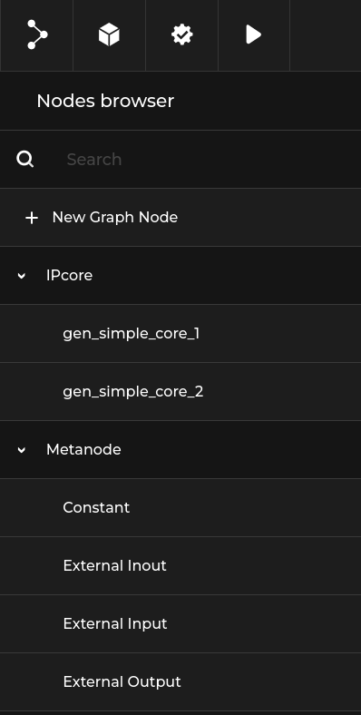
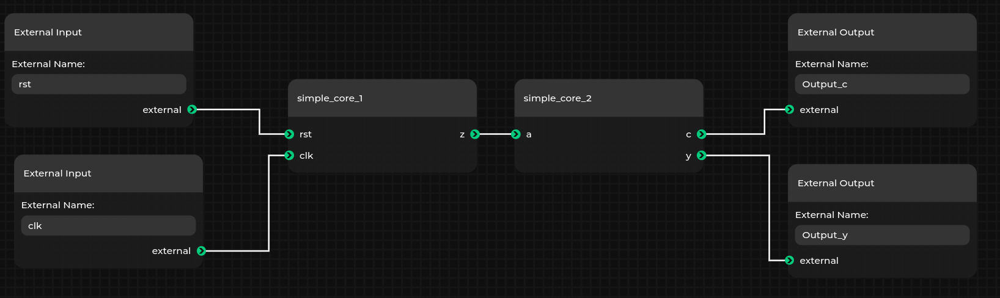
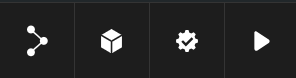

Getting started¶
Goal of this chapter is to show step by step how to create simple design with topwrap.
All necessary files to follow this guide are in examples/getting_started_demo directory.
Important
This is just an example, if you haven’t installed the topwrap yet go to the Installation chapter and make sure to install additional dependencies for topwrap parse.
Design overview¶
The design we are going to create is visually represented below:
It consists of two cores: simple_core_1 and simple_core_2 that are connected to each other and to some external metanodes.
Parsing verilog files¶
First step in creating own designs is to parse verilog files into ip core description yamls that are understood by topwrap.
In the verilogs directory you can find two verilog files which describe simple_core_1 and simple_core_2.
To generate ip core descriptions from these verilogs run:
topwrap parse verilogs/{simple_core_1.v,simple_core_2.v}
Topwrap will generate two files gen_simple_core_1.yaml and gen_simple_core_2.yaml that represent corresponding verilogs.
Building design with topwrap¶
Creating the design¶
Generated ip core yamls can be loaded into GUI.
Build and run gui server
topwrap kpm_build_server && topwrap kpm_run_server &
Run gui client with the generated ip core yamls
topwrap kpm_client gen_simple_core_1.yaml gen_simple_core_2.yaml
Now when you connect to http://127.0.0.1:5000 there should be kpm gui.
Loaded ip cores can be found under IPcore section:
With these IPcores and default metanodes you can easily create designs by dragging cores and connecting them.
Let’s make the design from the demo that was shown at the beginning of this guide.
Note
You can change name of node by right clicking on it and selecting rename.
You can save the project to the Design Description format, which is used by topwrap to represent the created design.
To do this select the graph button and select Save file.
Note
The difference between Save file and Save graph file lays in which format will be used for saving.
Save file will save the design description in yaml format which topwrap uses.
Save graph file will save the design in graph json format which kpm uses. You should only choose this one if you have some specific custom layout of nodes in design and you want to save it.
Generating verilog¶
You can generate verilog from design created in previous section.
If you have the example running as described in previous section then on the top bar you should see these 4 buttons:
First one is for loading or saving designs.
Second is for toggling node browser.
Third one is for validating the design.
And the fourth is for building the design which will generate the verilog file in /build directory of the current example and run the design.
Appendix: Command-line flow¶
Creating the design¶
Manual creation of designs requires familiarity with Design Description format.
First let’s include all the ip core files we will need in the ips section.
ips:
simple_core_1:
file: gen_simple_core_1.yaml
simple_core_2:
file: gen_simple_core_2.yaml
Notice that here we also declare how to node will be named.
Ip core gen_simple_core_1.yaml will be named simple_core_1 in gui.
Now we can start creating the design under the design section.
Our design doesn’t have any parameters so we can skip this part and go straight into ports section.
There we define connections between ip cores.
In demo example there is only one connection - between gen_simple_core_1 and gen_simple_core_2.
In our design it will look like below:
design:
ports:
simple_core_2:
a:
- simple_core_1
- z
Notice that we connect input to output.
All left to do are external connections to metanodes.
We declare them like this:
external:
ports:
in:
- rst
- clk
out:
- Output_y
- Output_c
Now connect them to ip cores.
design:
ports:
simple_core_1:
clk: clk
rst: rst
simple_core_2:
a:
- simple_core_1
- z
c: Output_c
y: Output_y
Final design:
ips:
simple_core_1:
file: gen_simple_core_1.yaml
simple_core_2:
file: gen_simple_core_2.yaml
design:
ports:
simple_core_1:
clk: clk
rst: rst
simple_core_2:
a:
- simple_core_1
- z
c: Output_c
y: Output_y
external:
ports:
in:
- rst
- clk
out:
- Output_y
- Output_c
Generating verilog¶
Info
Topwrap uses Amaranth for generating verilog top file.
To generate top file use topwrap build and provide the design.
Ensure you are in the examples/getting_started_demo directory and run:
topwrap build --design {design_name.yaml}
Where the {design_name.yaml} is the design saved at the end of previous section.
The generated verilog file can be found in /build directory.
Notice that you will get warning:
WARNING:root:You did not specify part number. 'None' will be used and thus your implementation may fail.
It’s because we didn’t specify any part with --part flag since it’s just a dummy example that is not for any specific FPGA chip.
For building your designs we recommend specifying the --part.